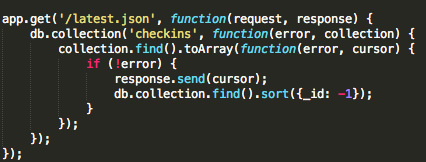

Assignment 4: Security
Introduction
For this assignment, I analyzed Carly Reilly's Mapchat for security and privacy. In this app, she has created a webpage (Assignment 2) that retrieves the user's location, sends it to a server, and displays the data from the server; she also created the server (Assignment 3) used for this webpage.
In this analysis, I provide three specific examples of threats to security in Carly's Mapchat program and recommend how to fix them.
Methodology
I initially tested the code using the black-box method and then looked at the program's code to examine other existing issues. I used tools such as Postman, curl, and shell scripting to perform my attacks. Notably, I changed the code of Assignment 2 so that it would run locally instead of off of the Heroku app.
Abstract of Findings
Most of the vulnerabilities in this code derive from a lack of awareness of the dangers of unprotected code. Without any sort of limits, hackers may perform seemingly simple acts to a person's code that will break it entirely. Thankfully, some sections of the code were protected from hackers by including checks for valid data. However, despite these efforts, Carly's assignments are still at risk of being attacked.
Issues Found
1. Cross Site Scripting via Message Key
- The issue: The message key is given no parameters to examine when data is stored in the key.
- Where: This problem occurs in the server code where data are given to the database.
- High Risk: Any type of data, including malicious code, can be injected into the database using the message key, which poses a large threat to the website's security.
- Description: This issue was found by injecting code into the message key using Postman.
- Proof of Vulnerability: Below is a screenshot of the data injected into the database and the resulting alert when I accessed the page.
- Resolution: To prevent hackers from injecting code into the database, the following code should be included in the program, which will prevent the code from responding to all non-alphanumeric characters:
message = message.replace([^a-zA-Z0-9]/g, "_"); This will prevent the program from reading and executing the injected code.
2. Sending Unapproved Logins to latest.json
- The issue: The code does not check if the login activity being requested in the latest.json page of the server contains a valid (or any) login.
- Where: This problem occurs in the server code. Commands are indicated for situations in which there is no error fetching the specified login's activity, but there are no commands specified for what happens when the login is either invalid or nonexistent. Below is a screenshot of code from Carly's Assignment 3 that shows this lack of commands.

- Low Risk: Although this fault in the program causes it to crash, this problem does not pose any threats to security.
- Description: This issue was found by reading Carly's code and finding the lack of conditionals that would check for these issues. I then tested whether this would crash the data by searching for my valid login's activity in latest.json, then searching for an invalid login's activity. I also searched for a blank login's activity.

- Resolution: To prevent this issue, code should be included to check for invalid and empty logins. Below is an example from my Assignment 3 code.
3. Injecting Infinite Amount of Data
- The issue: An infinite amount of data can be added to the database, which will cause problems (e.g., program crashes, overloads Mongo/Heroku and charges your account). .
- Where: This problem occurs in the server code. The code does not have a limit for how much data can be put into the database, which is the source of the problem.
- High risk: Anybody who has the URL and knowledge of the required parameters of the database can perform this hack. Because we are not entirely sure what would happen if the database becomes overloaded, it is better to classify this as a high-risk issue and always check for it in order to avoid damage to the program and its database.
- Description: This issue was found by reading Carly's code and finding the lack of conditionals that would check for these issues. I then tested whether I could perform this hack using shell scripting. Below are screenshots of how I repeatedly injected data.

- Resolution: To prevent someone from infinitely injecting data into the database, there should be a limit to the number of times (within a given timeframe) that users can insert data.
Conclusion
As demonstrated by the three issues described above, security is a major concern for web developers of all levels. Even for small scale projects, such as those we have completed in COMP20, we can still fall victim to security breaches. Issues with the server and client components of Mapchat make it easy for outsiders to break the code, but thankfully the recommendations to fix these issues come at a minimal cost.